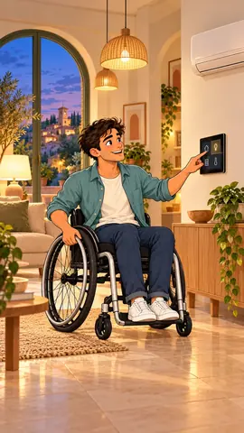
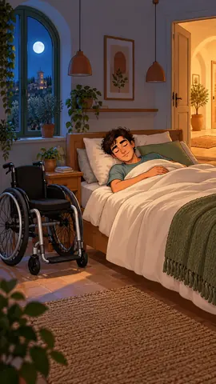

La casa ascolta.
Tu scegli.
Voce, accessi e comandi raggiungibili: sei scene di vita quotidiana in una casa progettata intorno all’autonomia.
Scopri cosa può fare la domotica.
Ogni scena racconta una possibilità. Guarda ogni clip e scopri i comandi e le automazioni che puoi costruire con DomoticaBari.


Le tapparelle ascoltano la tua voce.
Un comando vocale può aprire o chiudere le tapparelle e richiamare una posizione preferita. L’automazione si adatta ai gesti che risultano più comodi nella tua giornata.
- Parole sempliciScegliere frasi facili da ricordare per le azioni frequenti.
- Apertura gradualeRegolare la quantità di luce con dispositivi compatibili.
- Più modi di comandareAffiancare voce, tablet e pulsanti raggiungibili.
Nella vita di tutti i giorni“Alza le tapparelle.” La camera si illumina gradualmente.

Anche il climatizzatore risponde.
La voce può accendere il climatizzatore, cambiare la temperatura e richiamare uno scenario di comfort. Il sistema si configura intorno alle tue preferenze e ai dispositivi presenti in casa.
- Accendere e spegnereControllare il climatizzatore compatibile con una richiesta vocale.
- Scegliere la temperaturaImpostare il valore desiderato senza cercare il telecomando.
- Comfort quotidianoCoordinare clima e presenza con le abitudini personali.
Nella vita di tutti i giorni“Imposta il climatizzatore a 23 gradi.” Il termostato conferma il comando.

Un accesso comodo, alla tua altezza.
Una serratura intelligente può collegarsi a un lettore per il riconoscimento del volto. Il punto di scansione si colloca a un’altezza adatta alla persona, insieme a un’apertura motorizzata compatibile.
- Lettore raggiungibileProgettare altezza e posizione rispetto alla postura e al percorso.
- Porta coordinataCollegare autorizzazione e apertura con dispositivi adatti.
- Modalità alternativePrevedere anche un comando accessibile sul tablet o un altro metodo configurato.
Nella vita di tutti i giorniIl lettore riconosce il ragazzo seduto e autorizza l’apertura dell’ingresso.

Il pannello è dove serve a te.
Un tablet può riunire i comandi della casa in un’interfaccia chiara. La posizione si sceglie per permettere un avvicinamento comodo e l’uso da seduti, senza ostacoli davanti allo schermo.
- Altezza su misuraDefinire la posizione in base alla portata reale della persona.
- Comandi chiariUsare pulsanti grandi, leggibili e organizzati per ambiente.
- Scenari quotidianiRichiamare luci, tapparelle e clima con un solo gesto.
Nella vita di tutti i giorniAl crepuscolo, il ragazzo tocca il tablet raggiungibile e spegne le luci del soggiorno e della zona pranzo.

La casa può aiutarti a contattare qualcuno.
Un comando vocale o un pulsante raggiungibile può avviare una chiamata o un avviso al contatto scelto. La casa conferma la richiesta e permette di capire se il contatto ha risposto.
- Un comando concordatoDefinire una frase o un pulsante facile da usare.
- Contatti scelti da teConfigurare chi riceve la richiesta e come viene contattato.
- Conferma chiaraMostrare o pronunciare lo stato della chiamata e permettere di annullarla.
Nella vita di tutti i giorniIl telefono è caduto sotto il mobile: resta tranquillo e dice “Chiama il mio contatto di aiuto”. È una chiamata al contatto configurato, non un invio automatico ai soccorsi.

Le luci seguono la fine della giornata.
Quando gli ambienti vengono lasciati vuoti, i sensori possono spegnere le luci dopo un intervallo configurato. Lo scenario notte può coordinare i punti luce e lasciare un percorso tenue per eventuali spostamenti.
- Spegnimenti automaticiSpegnere corridoio e soggiorno quando non sono più utilizzati.
- Un percorso notturnoAccendere una luce morbida al passaggio, se desiderato.
- Scelte personaliDefinire tempi e ambienti in base alle abitudini e al comfort.
Nella vita di tutti i giorniIl ragazzo è già a letto con gli occhi chiusi. Le luci del corridoio si spengono da sole.
Una casa che funziona
come serve a te.
Raccontami gli ambienti, le abitudini e le automazioni che vorresti. Partiamo dalle tue esigenze.